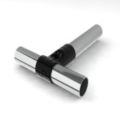
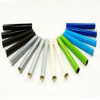
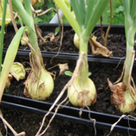
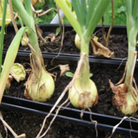

Welcome to GutterGrow
What is GutterGrow
GutterGrow is a simple to use system of joints and tubes for building vertical allotments or gardens. The joints and tubes are connected together into robust 3D frames which hold guttering, plant containers, irrigation and other plant growing sensors and equipment. Frames can be constructed to fit most spaces and can be angled for irrigation and drainage.

GutterGrow Components
There are two types of component used to build GutterGrow frames. GutterGrow tubes are 22mm tubes made in plastic or plastic coated metal. Tubes are built into frames using a wide range of connecting joints. Guttering, containers and/or plant growing equipment can be mounted on the frames. Frames can be moved, reconfigured or dismantled as required.

Plants and Seeds
You will be amazed at the range of flowers and vegetables that can be grown in GutterGrow systems. We are currently growing beetroots, chilies, onions, peas, beans, courgettes, radishes, mixed leaves, herbs and many more types. Contact us for more information.
 

Water, Heat and Light
GutterGrow frames are ideal for attaching irrigaton and lighting systems to automate the plant care process. We are developing a range of wireless controlled sensors and actuators.